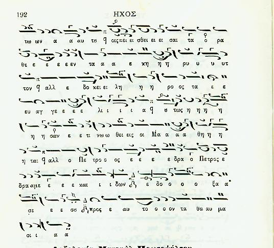

Εναρμόνια φθορά στον Τέταρτο στιχηραρικό / Enharmonic Fthora in Fourth Mode Sticheraric
A while ago, Alexandros Andreou
raised the issue of placement of the Enharmonic fthora on GA of Fourth
mode Sticheraric. The fthora is placed in Ioannis Anastasimatarion, but
not in Petros Efesios' one. What does it mean? Here is the relevant
passage (see e.g. the middle of the first line) :

Here is a recording of the Fourth
Eothinon by Th. Stanitsas' student, Christos Dimou [
mp3,1 Mb] (broadcasted by S. Kissas, offered by S.
Gugushvili)
Shota has just sent me the score from
the Musike Bibliotheke (1867) and it has permanent crossed diesis
(sharp) on GA instead of the enharmonic. Here it is :
So I guess it is clearer now that the fthora is placed for BOY
and not for GA as I speculated before. According to some people,
the BOY of Legetos is slightly lower than the diatonic BOY. So by
placing the permanent diesis there we could be reminded that BOY is
diatonic, not the BOY of Legetos. Still not sure though. In my
opinion the use of the crossed diesis is somehow extreme as it
usually means a significant (~half tone) sharp effect, however, it is
clearer that it refers to BOY in this case. Any better answer?
G. K. Michalakis: In Mi
apostrepsis, a flat (in some
books, a chontinuous hyphesis) is placed. Its effect not only
brings
Ga slightly downwars, but Bou and PA as well, giving an ALL new
sound
to the repetion of the word THLIIIIIBOMAI... Listen to Iakovos
doing
it..
In Fourth mode stichiraric, its effect is NOT so much
to bring down Ga, but to PUSH UP BOU, as is VERY correctly indicated by
the syneches (continuous) diesis on Ga.... try doing this by Grinning
of the Bou's, which should be pushed UP towards the GA....
All this goes to show the importance of ORAL tradition.. the SAME
fthora on the SAME note on the SAME gender on two DIFFERENT modes has
TWO COMPLETELY different effects..

{kind=link}
{kind=link}